Peugeot
Lions Since 1810
Founded: 1810
Country: France
Icon: 205 GTI
Oldest Automaker
Lions Since 1810
Peugeot is the world's oldest automaker still in production. The company began in 1810 manufacturing coffee mills and bicycles. The lion logo, introduced in 1847, represents strength and speed.
The first Peugeot automobile, a three-wheeled steam car, appeared in 1889. The 1891 Type 3 was the first gasoline-powered Peugeot. By 1900, Peugeot was France's largest automaker.
Between the wars, Peugeot produced a range of cars, including the 201 (1929), the first car with independent front suspension. The 402 (1935) had a futuristic design with hidden headlights.
After WWII, Peugeot became a symbol of French practicality and style. The 203 (1948) was the first new post-war model. The 403 (1955), designed by Pininfarina, was a success.
The 1960s brought the 404 (1960), another Pininfarina masterpiece. It was rugged, elegant, and successful in Africa and rallying. The 504 (1968) became an icon of durability – still seen in Africa today.
Peugeot merged with Citroën in 1976 to form PSA Peugeot Citroën. The 1970s and 1980s brought the 104 (small car) and 305.
The 205 (1983) saved Peugeot. It was a modern supermini, and the 205 GTI (1984) created the hot hatch genre. It was the car everyone wanted.
Through the 1990s and 2000s, Peugeot produced the 106, 306, 406 (with its famous sedan shape), and the 206 (1998), which sold over 8 million units.
Today, Peugeot is part of Stellantis. The brand has moved upmarket with the 508, 3008, and 5008 SUVs. The 208 is a European best-seller. Peugeot is also returning to motorsport with the 9X8 Le Mans Hypercar.
"The lion is the symbol of our brand – strong, powerful, and always moving forward."- Armand Peugeot
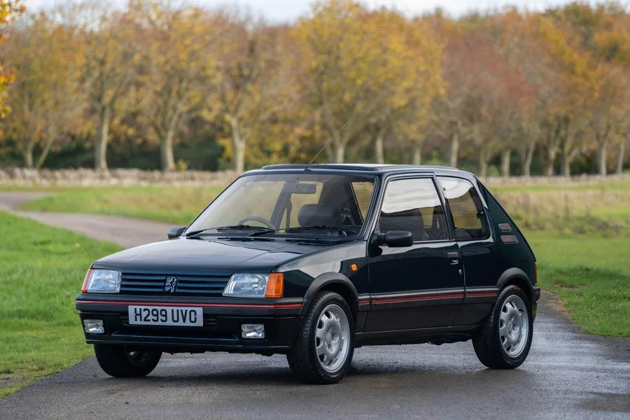
1984-1994
The original hot hatch. The 205 GTI set the template – light, nimble, and with a revvy engine. The 1.9L version is a legend.
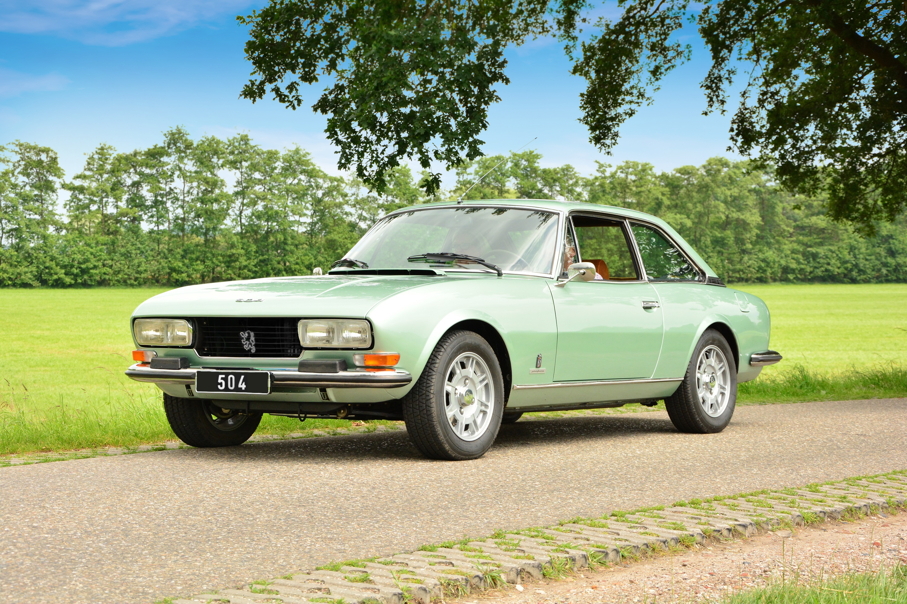
1968-1983
The African taxi. Rugged, durable, and elegant. Still seen everywhere in Africa. 1969 European Car of the Year.
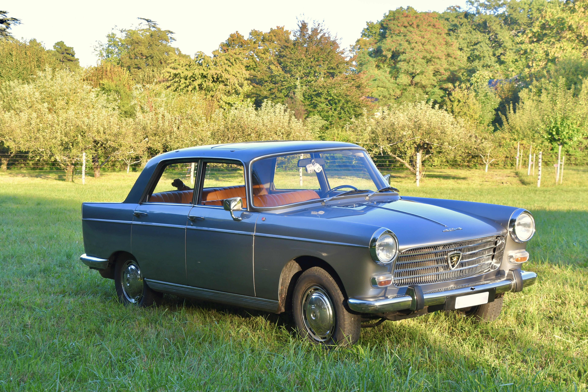
1960-1975
Pininfarina-designed beauty. Elegant sedan and cabriolet. Successful in rallying and durable.
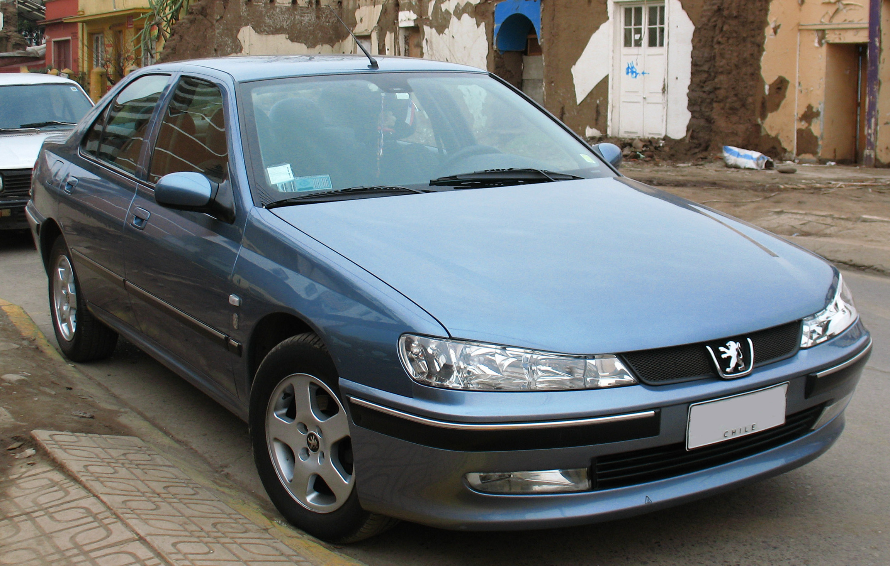
1995-2004
The elegant sedan. Famous in the Taxi films. Coupe version is a modern classic.
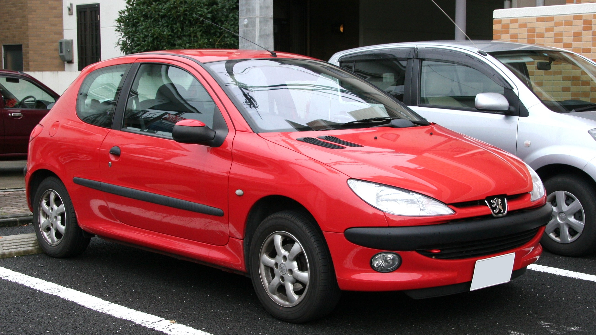
1998-2012
Best-selling Peugeot ever. Over 8 million sold. 206 WRC dominated rallying.
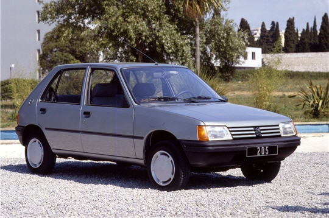
1983-1998
The car that saved Peugeot. Perfectly styled supermini, with GTI, Rallye, and Cabrio versions.
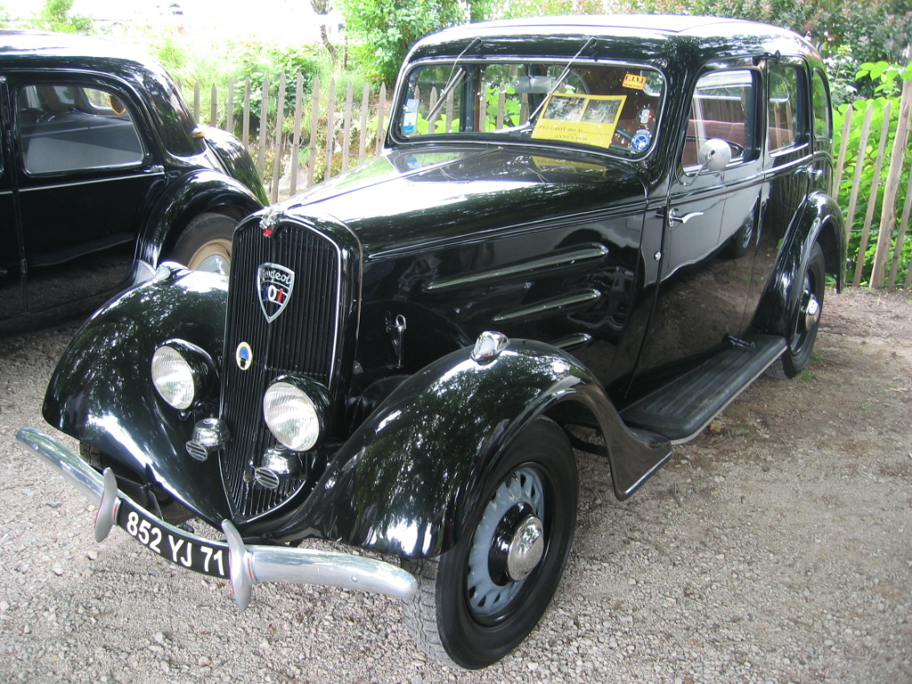
1929-1937
First car with independent front suspension. Established Peugeot's naming system (three numbers with zero).
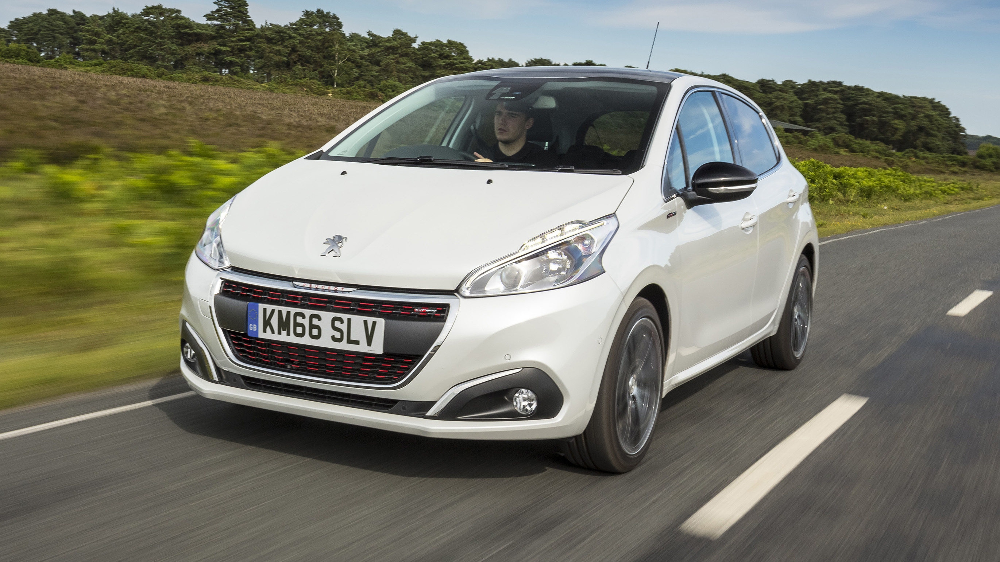
2012-present
Current best-seller. 2020 model won Car of the Year. Electric e-208 version.
The 205 GTI defined the hot hatch. It wasn't the first – that was the Golf GTI – but it perfected the formula.
Launched in 1984, the 205 GTI had a 1.6L engine with 105 hp. In 1986, the 1.9L arrived with 130 hp. It weighed only 850 kg, so performance was electric.
The 205 GTI was light, nimble, and communicative. It had go-kart handling and a revvy engine. It was the driver's choice.
The 205 GTI remains a cult classic. It's the benchmark for front-wheel drive hot hatches. Collectors pay premium prices for good examples.
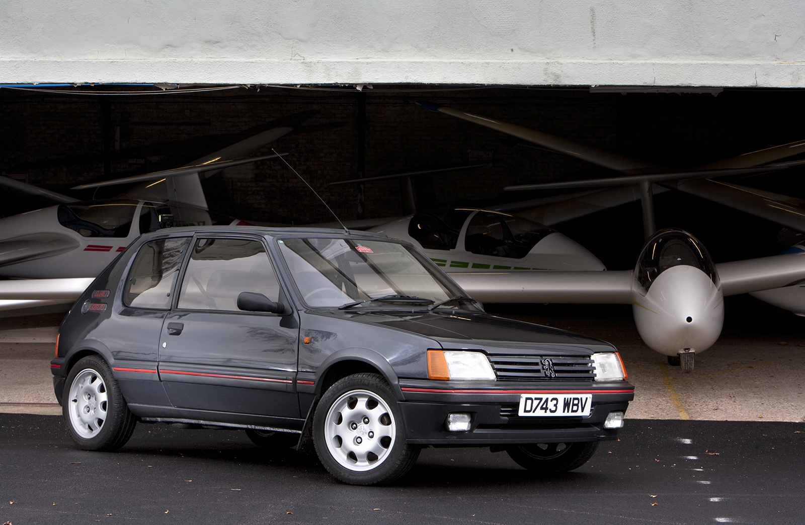
The Peugeot 504 is one of the toughest cars ever built. It's legendary for its durability, especially in Africa.
Designed by Pininfarina, the 504 was elegant and modern. It won European Car of the Year in 1969.
The 504 was built to last. Its rugged suspension, simple mechanics, and rust-resistant body made it perfect for rough roads. In Africa, it became the taxi of choice – you still see them running today.
The 504 was produced for over 30 years in various countries. It's a testament to brilliant engineering.
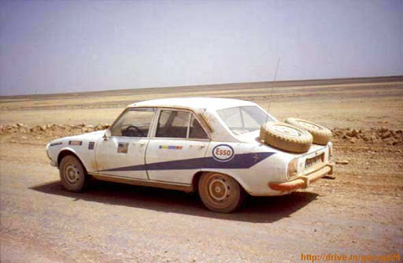
The 205 T16 is one of the most iconic rally cars – mid-engine, 4WD, and 500 hp in a tiny body. Group B insanity.
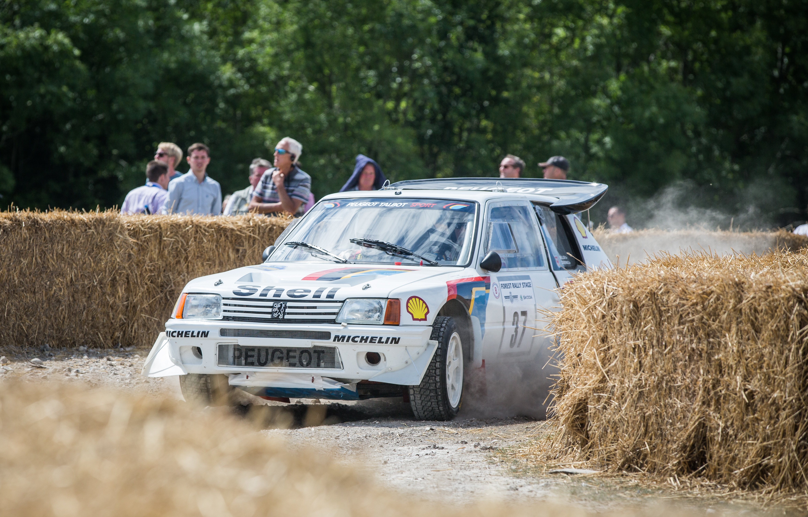